APP Monitor — Guia de usoAPP MONITOR / GUIA DE USO · 1/22APP Monitor
Tecnologia da escola, organizada em um só lugar.
- Acompanhe os equipamentos e os empréstimos.
- Professor: solicite, utilize e devolva.
- Administrador: gerencie, aprove e confira.
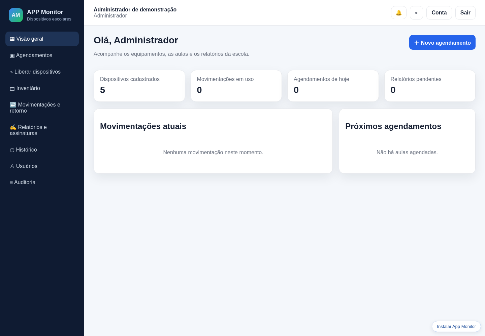
Quem faz o quê?
Cada perfil tem suas funções.
- Professor: agenda, acompanha e registra a utilização.
- Administrador: gerencia usuários e inventário; também opera as liberações.
- TI: aprova, libera e confere os aparelhos.
O caminho de um empréstimo
Do pedido ao relatório final.
- 1. Professor solicita → equipe aprova.
- 2. Equipe libera → professor utiliza.
- 3. Professor devolve → equipe confere.
- 4. As contas responsáveis assinam o relatório.
Como entrar no app
Use o navegador do computador ou celular.
- 1. Abra o endereço do App Monitor.
- 2. Informe seu e-mail e sua senha.
- 3. Clique em Entrar.
- 4. Confira seu nome e perfil no cabeçalho.
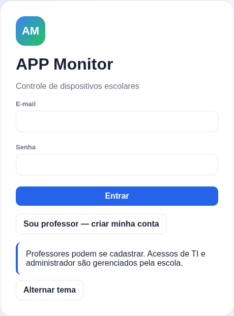
Professor: criar sua conta
O próprio professor pode se cadastrar.
- 1. Clique em Sou professor — criar minha conta.
- 2. Informe seu nome inteiro e e-mail.
- 3. Crie uma senha com pelo menos 12 caracteres.
- 4. Confirme a senha e clique em Criar conta de professor.
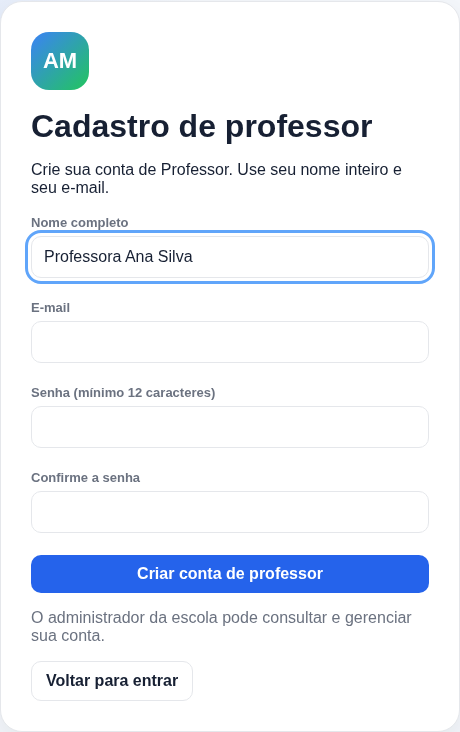
Trocar a senha provisória
Para contas criadas pelo administrador.
- 1. Entre com o e-mail e a senha provisória recebida.
- 2. Digite a senha provisória no formulário.
- 3. Crie e confirme sua nova senha.
- 4. Clique em Salvar minha senha.
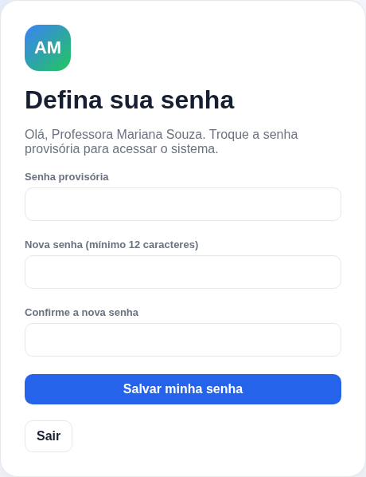
Professor: sua visão geral
Veja seus pedidos e movimentações.
- 1. Use Visão geral para acompanhar suas atividades.
- 2. Abra Agendamentos para ver os pedidos.
- 3. Em Meus dispositivos, acompanhe os empréstimos.
- 4. Consulte as notificações no sino.
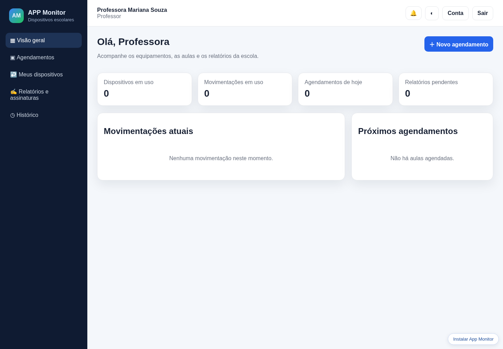
Fazer um agendamento
Solicite os aparelhos para sua aula.
- 1. Clique em + Novo agendamento.
- 2. Escolha data e horário; informe a turma.
- 3. Selecione o tipo e a quantidade de aparelhos.
- 4. Clique em Salvar agendamento.
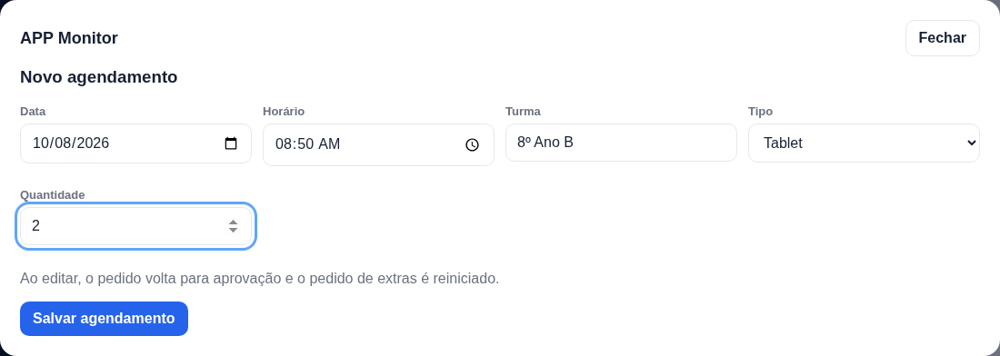
Acompanhar a aprovação
Confira o pedido antes de retirar os aparelhos.
- 1. Abra Agendamentos.
- 2. Pendente: o pedido aguarda aprovação da equipe.
- 3. Aprovado: combine a retirada com a equipe.
- 4. Se editar o pedido, ele volta para aprovação.
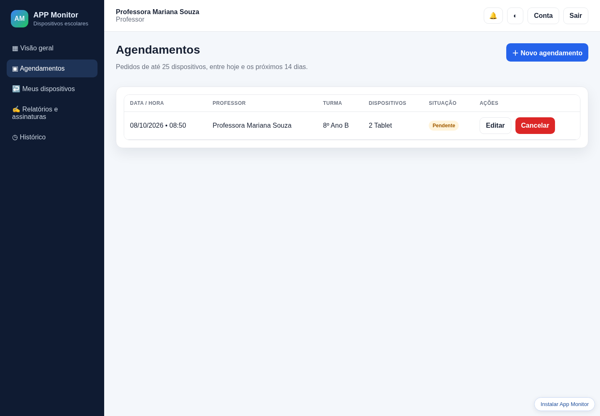
Usar e devolver os aparelhos
Registre a utilização da turma.
- 1. Abra Meus dispositivos → Abrir movimentação.
- 2. Informe o aluno associado a cada aparelho.
- 3. Escreva o relato da aula e das ocorrências.
- 4. Entregue os aparelhos e clique em Enviar devolução.
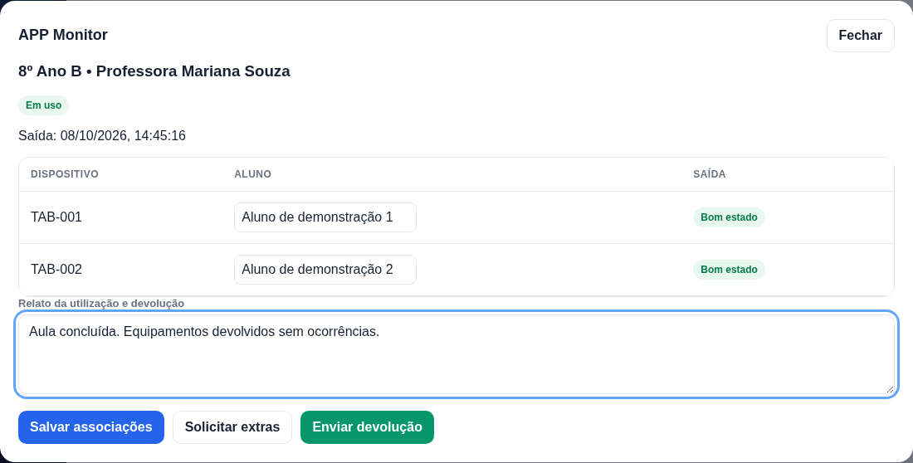
Assinar o relatório
Finalize o registro após a conferência.
- 1. Abra Relatórios e assinaturas.
- 2. Clique em Ver relatório e confira as informações.
- 3. Desenhe sua assinatura no espaço indicado.
- 4. Clique em Confirmar minha assinatura.
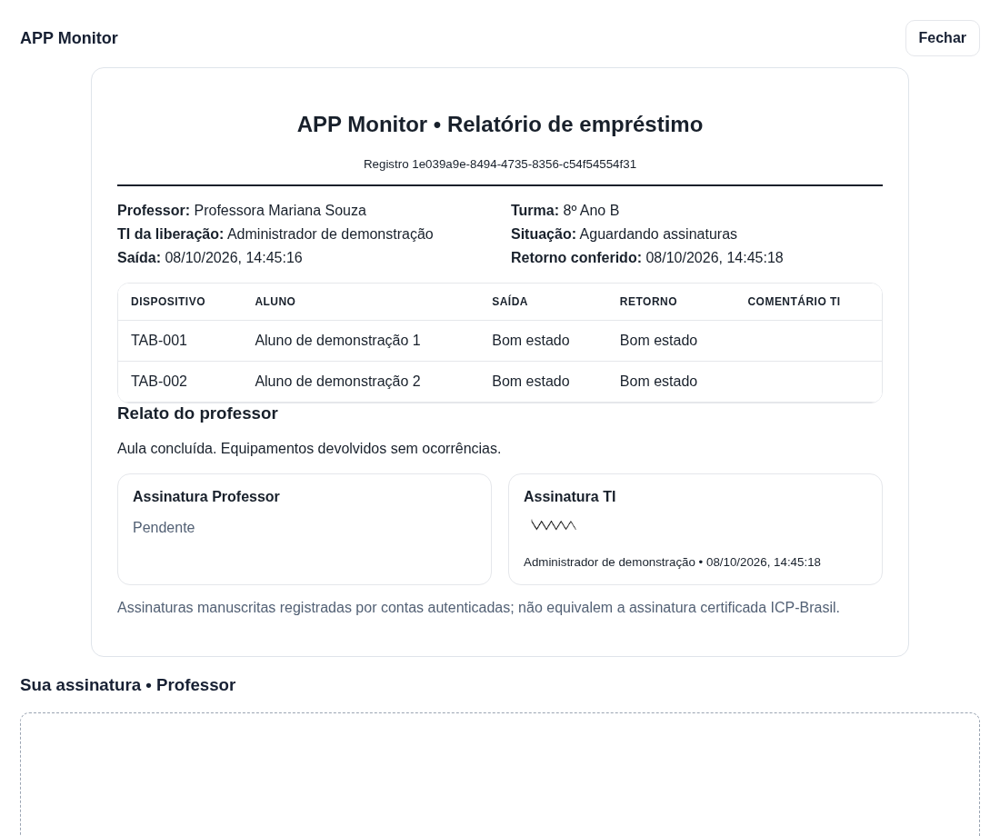
Administrador: visão geral
Acompanhe a operação da escola.
- 1. Consulte os indicadores e as notificações.
- 2. Abra Usuários para gerenciar os acessos.
- 3. Use Inventário para cuidar dos aparelhos.
- 4. Acompanhe pedidos, retornos e relatórios.
Gerenciar os usuários
Cadastre e mantenha os acessos da equipe.
- 1. Abra Usuários → + Novo usuário.
- 2. Informe nome, e-mail e perfil correto.
- 3. Cadastre e entregue a senha provisória em particular.
- 4. Use as ações da lista para editar, redefinir senha ou desativar.
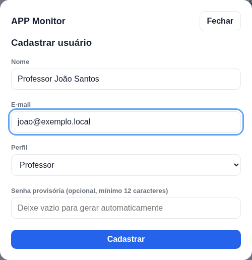
Conhecer o inventário
Identifique cada equipamento.
- 1. Abra Inventário.
- 2. Pesquise controle interno, série, QR, fabricante ou modelo.
- 3. Abra Editar dispositivo para completar os dados.
- 4. Use QR para visualizar e imprimir a etiqueta.
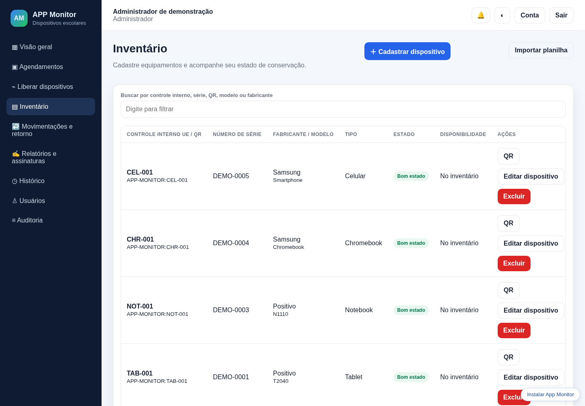
Importar a planilha da escola
Confira a seleção antes de gravar.
- 1. Abra Inventário → Importar planilha.
- 2. Selecione o .xls exportado pelo inventário escolar.
- 3. Confira quantidades, conflitos e séries ausentes.
- 4. Clique em Importar dispositivos.
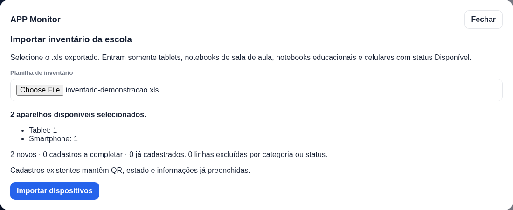
Aprovar um pedido
Prepare a retirada dos equipamentos.
- 1. Abra Agendamentos.
- 2. Confira professor, turma, data, tipo e quantidade.
- 3. Clique em Aprovar no pedido pendente.
- 4. No dia agendado, clique em Liberar.
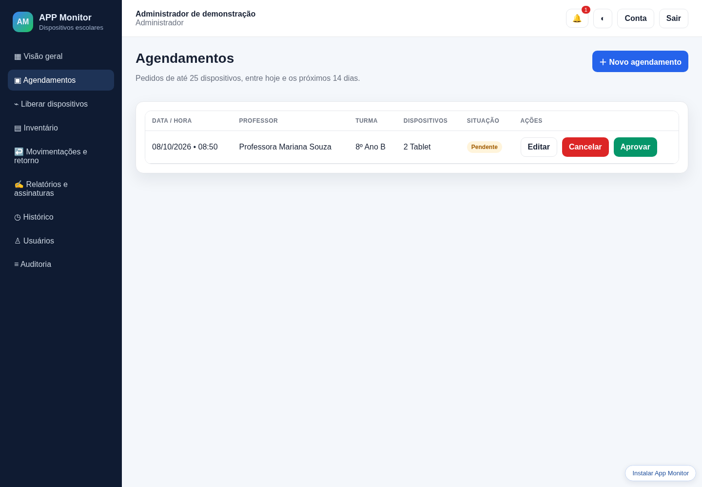
Liberar os dispositivos
Escolha os aparelhos que serão entregues.
- 1. Confira o agendamento selecionado.
- 2. Leia o QR ou código de barras, ou digite o identificador.
- 3. Também é possível marcar os aparelhos na lista.
- 4. Confira a quantidade e clique em Liberar dispositivos.
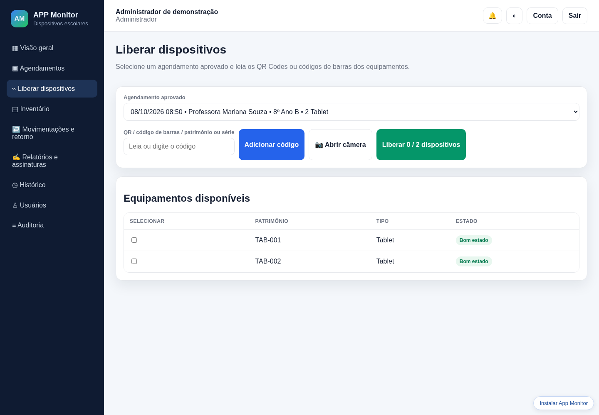
Apontar a câmera corretamente
Use a linha para escolher a etiqueta desejada.
- 1. Clique em Abrir câmera e permita o acesso.
- 2. Alinhe a etiqueta à linha vermelha central.
- 3. Mantenha o código completo dentro da moldura.
- 4. Afaste as outras etiquetas e procure boa iluminação.
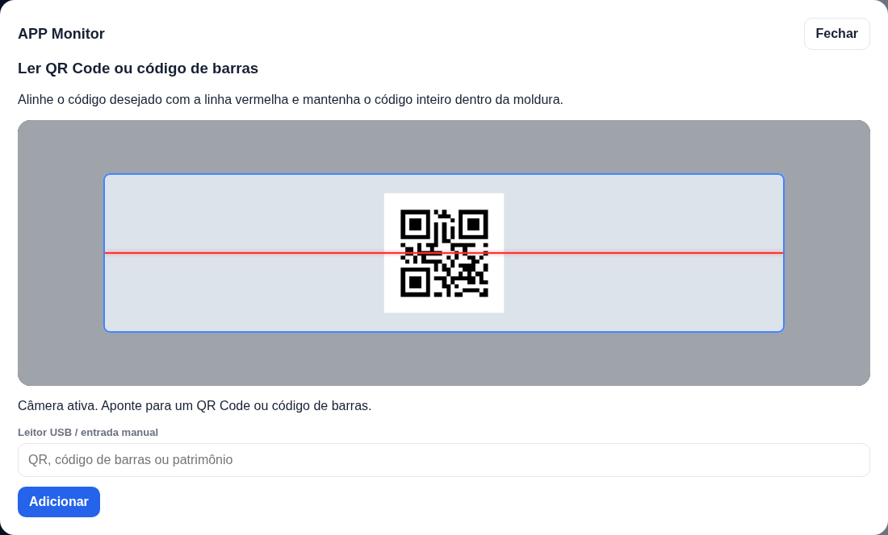
Conferir a devolução
Confira os aparelhos recebidos.
- 1. Abra Movimentações e retorno → Abrir movimentação.
- 2. Compare os aparelhos físicos com a lista.
- 3. Atualize o estado e registre comentários quando necessário.
- 4. Clique em Concluir conferência e assine o relatório.
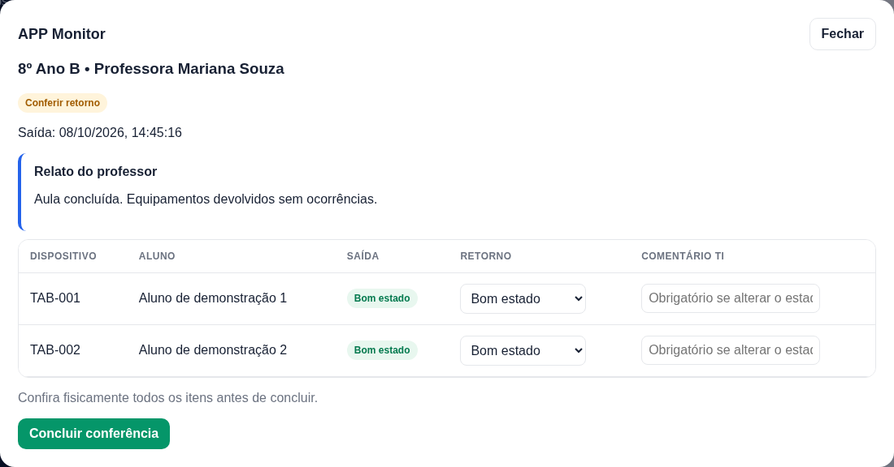
Consultar o histórico e o PDF
Recupere os registros concluídos.
- 1. Abra Histórico.
- 2. Localize o empréstimo desejado.
- 3. Clique em Visualizar / PDF.
- 4. Use Imprimir / salvar PDF para guardar uma cópia.
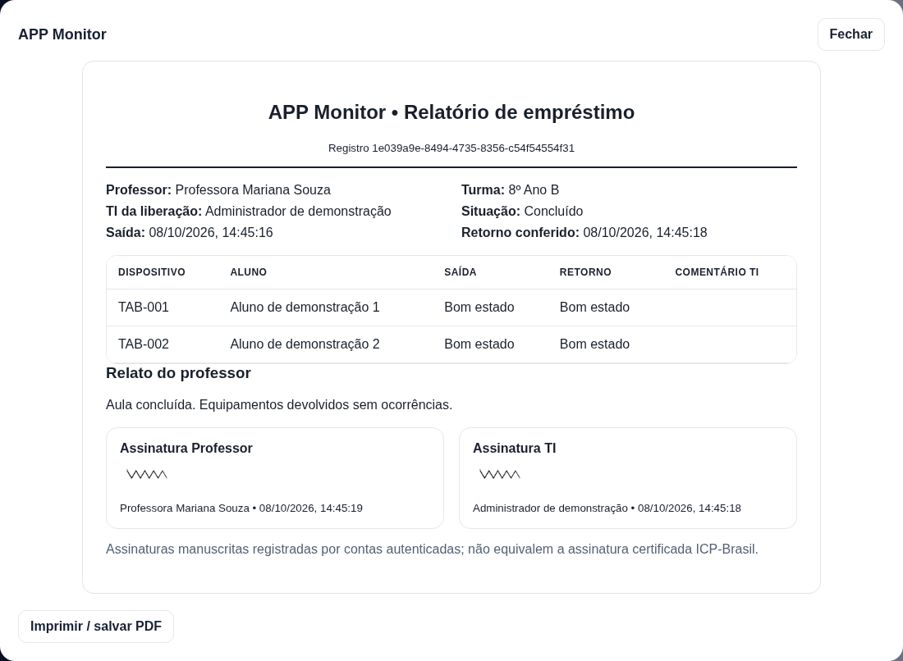
Usar no celular
O navegador já permite usar o aplicativo.
- 1. Abra o mesmo endereço no navegador do celular.
- 2. Entre com sua conta normalmente.
- 3. Se quiser, adicione um atalho à tela inicial.
- 4. Para ler etiquetas, permita o acesso à câmera.
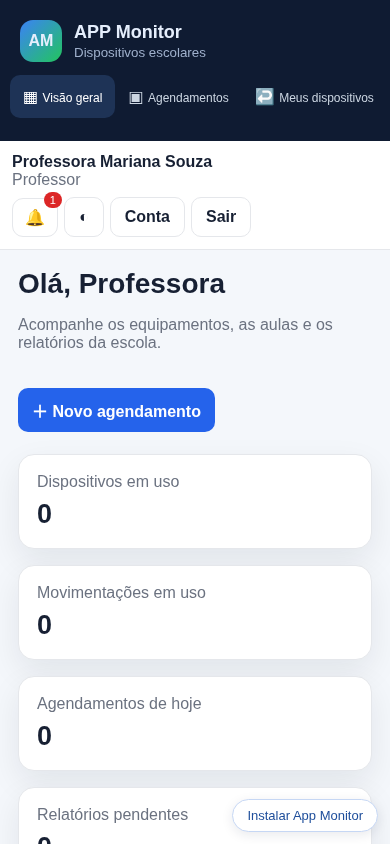
Pronto para começar
Uma conta, um pedido e um registro completo.
- Professor: entrar → agendar → utilizar → devolver → assinar.
- Administrador: gerenciar → aprovar → liberar → conferir → assinar.
- Dificuldade com a senha? Procure o administrador.
- Série ausente? Confira a etiqueta S/N e complete o inventário.